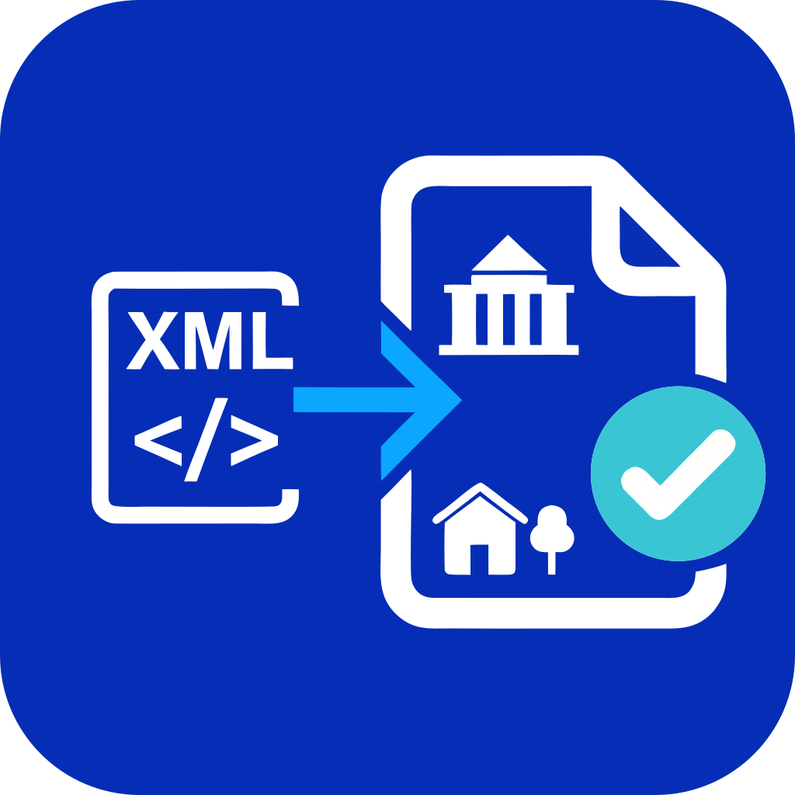
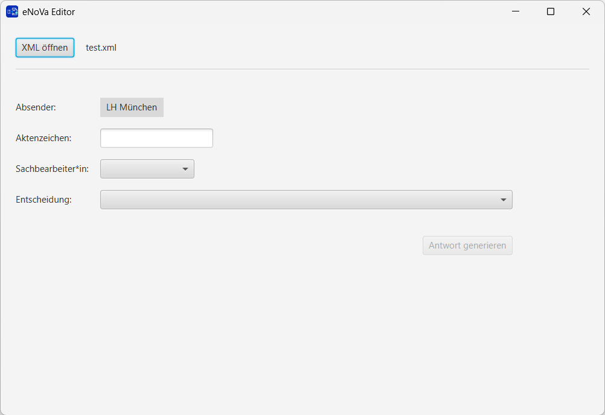

eNoVA-Editor
Der eNoVA-Editor ermöglicht Kommunen, Dateien im Format XJustiz.enova.2900003 in einer menschenlesbaren Form anzuzeigen und eine XJustiz-Antwortdatei zu erstellen.
Über das Projekt
Die Landeshauptstadt München entwickelt federführend den eNoVA-Editor für alle Kommunen in Deutschland. Sie stellt das Tool als Open-Source-Software kostenlos unter der MIT-Lizenz zur Verfügung.
Das Projekt befindet sich derzeit in der Testphase. Diese wird voraussichtlich am 1. Dezember 2026 abgeschlossen.
Was macht der eNoVA-Editor?
Nach Eingang einer Nachricht über das beBPo öffnen Sachbearbeiter*innen die XML-Datei im eNoVA-Editor. Die für die Bearbeitung relevanten Inhalte werden in Briefform übersichtlich dargestellt.
Anschließend können sie Aktenzeichen, Sachbearbeiter*in und Entscheidung erfassen und daraus eine rechtskonforme XJustiz-Antwortdatei erstellen.

Technische und rechtliche Grundlagen
Technische Grundlagen
Eingehende Nachricht:
eNoVA.2900003.ersuchenSachentscheidung
Antwortnachricht:
eNoVA.2900003.sachentscheidung
Rechtliche Grundlage
Gesetz zur Digitalisierung des Vollzugs von Immobilienverträgen, der gerichtlichen Genehmigungen von notariellen Rechtsgeschäften und der steuerlichen Anzeigen der Notare (eNoVA-Gesetz). Verkündet im Bundesgesetzblatt (BGBl. I 2026, Nr. 192) .
Fragen und Austausch
Jeden Freitag ab 14:00 Uhr
findet ein offenes Meeting statt, in dem Fragen zum
eNoVA-Editor beantwortet werden.
Sollten mehr Personen teilnehmen wollen, als es Plätze gibt,
wird das Meeting um 15:00 wiederholt.
Bei Fragen erreichen Sie uns unter enova-editor@muenchen.de .
eNoVA Editor
The eNoVA Editor enables German municipalities to display XJustiz.enova.2900003 files in a human-readable format and create an XJustiz response file.
About the project
The City of Munich is leading the development of the eNoVA Editor for municipalities throughout Germany. The tool is made available free of charge as open-source software under the MIT License.
The project is currently in the testing phase, which is expected to be completed by 1 December 2026.
What does the eNoVA Editor do?
After receiving a message via the beBPo secure government mailbox, caseworkers open the XML file in the editor. The information relevant to processing the request is displayed in a clear, structured format.
They can then enter the file reference, select the responsible caseworker and record a decision to generate a legally compliant XJustiz response file.
Technical and legal background
Technical details
Incoming message:
eNoVA.2900003.ersuchenSachentscheidung
Response message:
eNoVA.2900003.sachentscheidung
Legal basis
Act on the Digitalisation of the Execution of Real Estate Contracts, Judicial Approvals of Notarial Legal Transactions, and Tax Notifications by Notaries (eNoVA Act). Published in the Federal Law Gazette (BGBl. I 2026, No. 192) .
Questions and exchange
Every Friday at
2 p.m. German time,
an open meeting is held to answer questions about
the eNoVA Editor.
If more people wish to attend than there are places
available, the meeting will be repeated at 3 p.m.
For questions, contact us at enova-editor@muenchen.de .